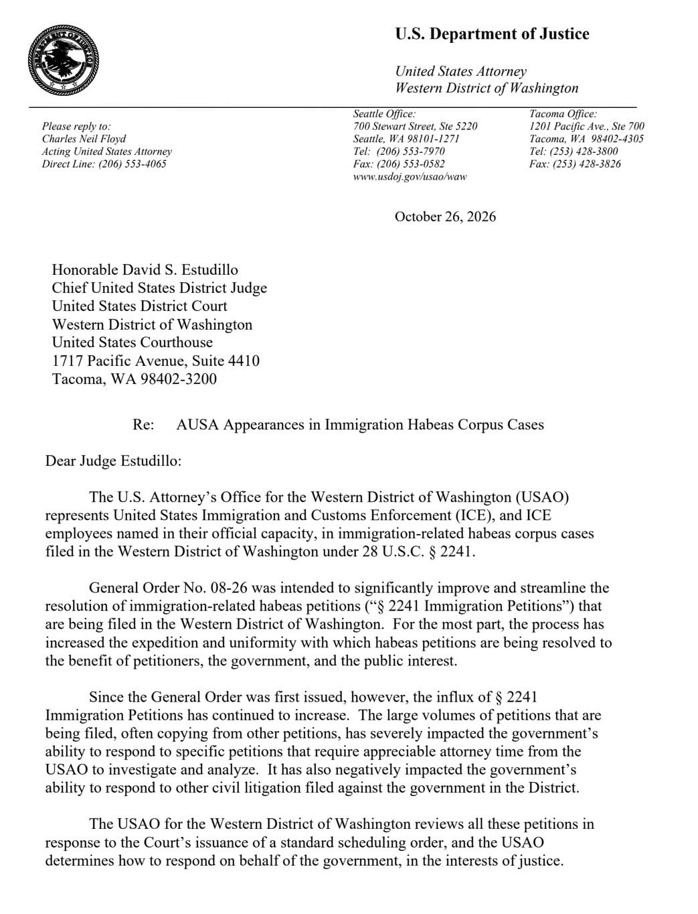
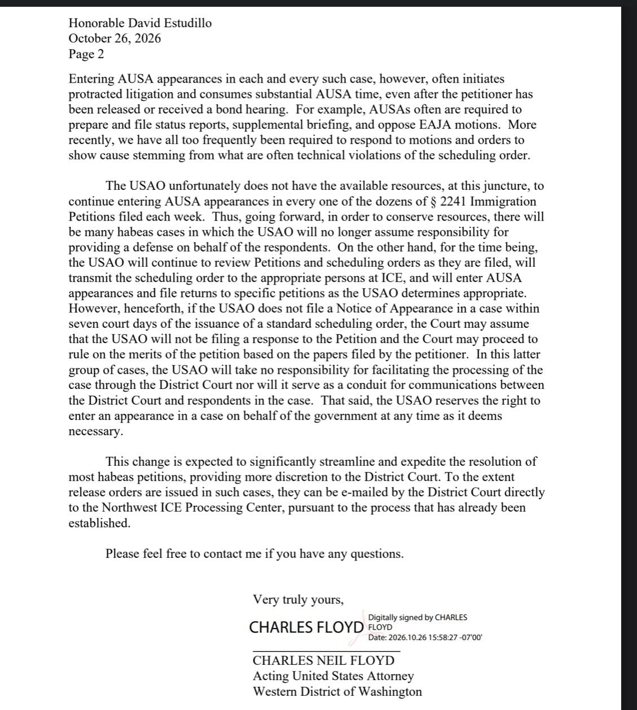

트럼프가 내린 추방 인원수 할당량 채운다고
ICE가 사람을 너무 많이 잡아들였다.
덕분에 구속적부심사에 검찰 인력이 대부분 묶이면서
다른 일을 아예 할 수가 없게 됐다.
안 그래도 검찰 인원이 줄면서 업무량 폭증했는데
이거까지 계속 맡을 수 없다는 게 워싱턴 검찰측 의견.
그래서 이제 ICE가 구금한 이민자 관련 구속적부심에는
검찰 인력 투입 안 하기로 함.
이제 판사가 ICE가 구속한 이민자의 석방을 명령하면,
다른 심사 거치지 않고 바로 석방된다.
DOGE로 인원이고 예산이고 다 날렸으면 감당을 하셔야지?